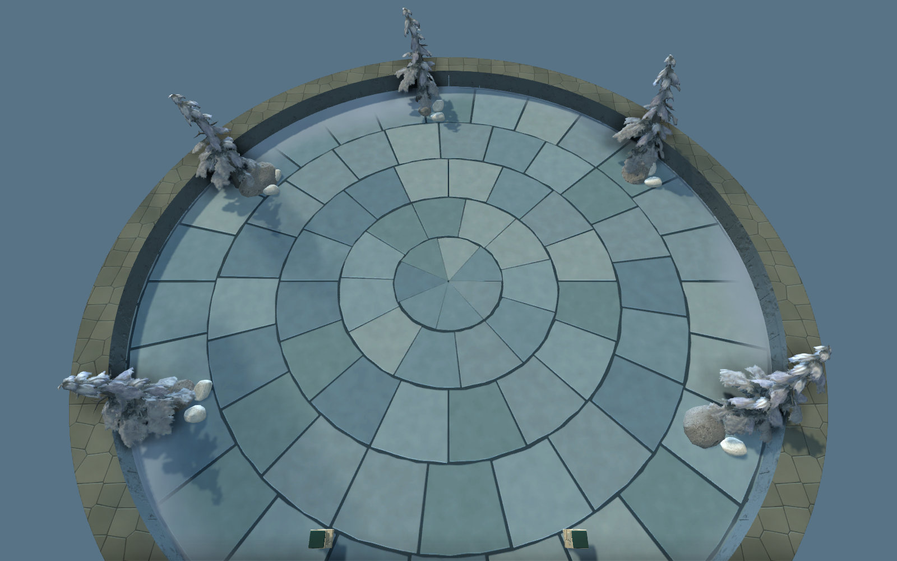

返回实机预览我做主体，你做点缀
我负责地形、主要材质、台阶与城墙入口、基础光照和通行；你负责草丛、碎石、落叶、水渍及小景组合。先确认主体，再开始手工点缀。
你的工作文件
下面路径点击即可选中，复制后在 Hammer 的 File → Open 中打开：
请编辑 survival_basin_edit.vmap。自动检查文件 survival_basin_review.vmap 会被重新生成。
四个分组
| 名称 | 职责 |
|---|
| AI_01_TERRAIN | 地形、地面和阶梯；由我更新 |
| AI_02_BASE_PROPS | 主体自带树木与岩石；由我更新 |
| AI_03_LIGHT_AND_MARKERS | 灯光、边界与出生标记；由我更新 |
| USER_90_DETAILS | 你的手工装饰；后续保留 |
分组名保持不变。你的装饰放进 USER_90_DETAILS。主体更新前先在 Hammer 保存；脚本会备份旧文件，并保留你的装饰组和组外新增对象。未保存到磁盘的修改不在文件备份里。
第一课：只放一个草丛
- 从 Workshop Tools 选择 survival，打开 Hammer 和上面的编辑地图。
- 找到资源面板的模型分类，搜索 fern002，核对下面的完整路径。
- 先把一个蕨类放到西侧松林平台边缘。平坦地面高度为 640。
- 检查根部落地、入口通畅，再保存到 USER_90_DETAILS 组。
正式操作时，我会根据你实际的 Hammer 窗口指出按钮位置，一步做完再进入下一步。第一课完成后，再教复制、旋转、缩放和模型替换。
常用资源
蕨类
碎石
边缘岩石
自制草簇
北侧专用地面
三种操作分别学
| 目标 | 操作 |
|---|
| 草换成石头 | 选中模型实体，在模型资源字段换 .vmdl |
| 地面换石材 | 选中地面面片，指定 .vmat；先在练习副本中做 |
| 石板上加水渍 | 使用验证好的贴花或覆盖组件，调尺寸与透明边缘 |
北侧新石地使用整岛专用 UV，不能像普通平铺纹理一样随意改缩放。水渍资源将在贴花课前单独准备与验证。
本次北侧材质

源文件、贴图与操作说明保存在本目录。更完整的文字说明：Hammer协作入门.md。